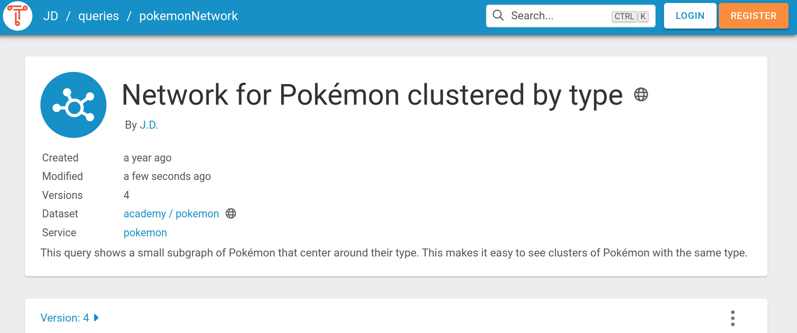

Saved Queries¶
A Saved Query is a versioned SPARQL query with its own URL. Using this URL, users are able to view any version of the query and its results. It can also be used to run the query and retrieve the results from a browser or a program, removing the hassle of figuring out how to run a SPARQL query.
How to save a query¶
There are two ways to create a saved query. You need to be logged in and have authorization rights on the dataset to use this feature
-
When working from the SPARQL IDE
-
Using the Saved Queries tab in a dataset
Creating a saved query with the SPARQL IDE is done by writing a query/visualization and hitting the save button
Creating a new version¶
Updating the saved query can be done by clicking a query in the Saved Queries tab and editing the query or the visualization. Hit the save button to save it as a new version.
Deleting a saved query¶
If you want to delete a saved query, you can do so by clicking the three dots on the top right corner of the query, as shown in the image below, and then clicking Delete.
Using a saved query¶
Sharing a saved query¶
To share a saved query, for example in Data Stories, you can copy the link that is used when you open the query in TriplyDB. Let's say you have a query called Timelined-Cars-BETA in the dataset core under the account dbpedia and you want to use version 9. Then the following link would be used:
https://triplydb.com/DBpedia-association/-/queries/timeline-cars/9
If you want to always use the latest query, you can simply omit the version number like so:
https://triplydb.com/DBpedia-association/-/queries/timeline-cars
Downloading a query result¶
The result of a query can be downloaded via the TriplyDB interface. After saving the query, open it in TriplyDB. e.g. https://triplydb.com/DBpedia-association/-/queries/timeline-cars/.
You can download results in different data format, depending on which visualization option you use. For example, if you want to download the results in a .json format, you can choose the option Response and click on the download icon or scroll down and click on Download result.
The downloaded file is automatically stored in the Downloads-folder and has the name of the query. In our example, the file is called timeline-cars.json. The downloaded file contains the query result as a json-object. TriplyDB also displays the json-object when selecting the option Response.
Below is a table of all supported visualizations and what format of results they produce.
| Visualization option | Result data format |
|---|---|
| Table | .csv |
| Response | .json |
| Gallery | Download not supported |
| Chart | .svg |
| Geo | Download not supported |
| Geo-3D | Download not supported |
| Geo events | Download not supported |
| Markup | .svg, .html |
| Network | .png |
| Timeline | Download not supported |
As another example, to download the query result in CSV-format, select the option Table and click on the download icon. The downloaded file is named after the query with the suffix .csv.
Download more than 10 000 query results - SPARQL pagination¶
This section explains how to retrieve all results from a SPARQL query using pagination.
Often SPARQL queries can return more than 10.000 results, but due to limitations the result set will only consist out of the first 10.000 results. To retrieve more than 10.000 results you can use pagination. TriplyDB supports two methods to retrieve all results from a SPARQL query. Pagination with the saved query API or Pagination with TriplyDB.js.
Pagination with the saved query API¶
Each TriplyDB instance has a fully RESTful API. The TriplyDB RESTful API is extended for saved SPARQL queries. The API for saved queries is extended with two arguments that the query is able to process paginated result sets. The arguments are ‘page’ and ‘pageSize’. An example of a paginated saved SPARQL query request would look like:
https://api.triplydb.com/queries/academy/pokemon-color/run?page=3&pageSize=100
The example request argument ‘page’ corresponds to the requested page. In the example request this would correspond to the third page of paginated SPARQL query, according to the ‘pageSize’. There is no maximum ‘page’ limit, as a SPARQL query could return an arbitrary number of results. When no results can be retrieved for the requested page an empty page will be returned.
The argument ‘pageSize’ corresponds to how many results each page would contain. The ‘pageSize’ has a default of 100 returned results and a maximum ‘pageSize’ limit of 10.000 returned results. The request will return an error when the ‘pageSize’ is set higher than 10.000.
The RESTful API for the saved SPARQL queries follows the RFC 8288 standard.
The request will return an response body containing the result set and a response header. The response header contains a link header with the relative "next" request, the relative "prev" request, and the relative "first" request. By following the "next" link header request you can chain the pagination and retrieve all results.
link:
<https://api.triplydb.com/queries/academy/pokemon-color/run?page=4&pageSize=100>; rel="next",
<https://api.triplydb.com/queries/academy/pokemon-color/run?page=2&pageSize=100>; rel="prev",
<https://api.triplydb.com/queries/academy/pokemon-color/run?page=1&pageSize=100>; rel="first"
Pagination with TriplyDB.js¶
TriplyDB.js is the official programming library for interacting with TriplyDB. TriplyDB.js allows the user to connect to a TriplyDB instance via the TypeScript language. TriplyDB.js has the advantage that it can handle pagination internally so it can reliably retrieve a large number of results.
To get the output for a construct or select query, follow these steps:
1. Import the TriplyDB library and set your parameters, regarding the TriplyDB instance and the account in which you have saved the query as well as the name of the query. Do not forget that we perform TriplyDB.js requests within an async context.
import Client from '@triply/triplydb'
async function run() {
// Your code goes here.
const client = Client.get({token: process.env.TRIPLYDB_TOKEN})
const account = await client.getAccount('account-name')
const query = await account.getQuery('name-of-some-query')
}
run()
2. Get the results of a query by setting a results variable. More specifically, for construct queries you use the statements() call:
const query = await account.getQuery('name-of-some-query')
const results = query.results().statements()
For select queries you use the bindings() call:
const query = await account.getQuery('name-of-some-query')
const results = query.results().bindings()
Additionally, saved queries can have 'API variables' that allow you to specify variables that are used in the query. Thus, if you have query parameters, pass their values as the first argument to results as follows:
// For SPARQL construct queries.
const results = query.results({
someVariable: 'value of someVariable',
anotherVariable: 'value of anotherVariable'
}).statements()
// For SPARQL select queries.
const results = query.results({
someVariable: 'value of someVariable',
anotherVariable: 'value of anotherVariable'
}).bindings()
3. To iterate the results of your SPARQL query you have three options:
a. Iterate through the results per row in a for-loop:
// Iterating over the results.
for await (const row of results) {
// execute something
}
Note: For select queries the for-loop iterates over the rows of the result set. For construct queries the for-loop iterates over the statements in the result set.
b. Save the results to a file. This is only supported for SPARQL construct queries:
// Saving the results of a SPARQL construct query to a file.
await results.toFile('my-file.nt')
c. Load all results into memory in the form of an Array. Note that this is almost never used. If you want to process results, then use the 3a option; if you want to persist results, then option 3b suits better.
// Loading results for a SPARQL construct or SPARQL select query into memory.
const array = await results.toArray()
Using a saved query as RESTful API¶
Each TriplyDB instance has a fully RESTful API. The TriplyDB RESTful API is extended for saved SPARQL queries. A saved query can be used as a RESTful API to retrieve data from your linked dataset. The URL next to the keywork API is the RESTful API URL and can be used with RESTful API libraries. You can copy the RESTful API by pressing the copy button just behind the URL. Pressing the copy button from the above query will result in the following run url:
https://api.triplydb.com/queries/DBpedia-association/timeline-cars/run
When you copy this URL in your browser or fetch the URL with curl, you will get a get request to a RESTful API and get a JSON representation of the data in your browser or command window.
Using a saved query in Python or R notebooks¶
SPARQL queries as a RESTful API, also means you can transport your data to your Python script, R script or Jupyter notebook. To use the result set from your SPARQL query you need to connect your script to the saved SPARQL query. To do this you will need to write a small connector. To help you out TriplyDB has added a code snippet generator for Python and R. This snippet contains the code to retrieve the data from the SPARQL query into your script or notebook. You can open the code snippet generator by clicking on the '' button on the right side of the screen.
Clicking the '' button opens the code snippet screen. Here you select the snippet in the language you want to have, either Python or R. You can then copy the snippet, by clicking the 'copy to clipboard' button or selecting the snippet and pressing ctrl-c. Now you can paste the code in the location you want to use the data. The data is stored in the data variable in JSON format.
When the SPARQL query is not public, but instead either private or internal, you will need to add an authorization header to the get request. Without the authorization header the request will return an incorrect response. Checkout Creating your API token about creating your API-token for the authorization header.
Check out the SPARQL pagination page when you want to query a SPARQL query that holds more than 10.000 results. The SPARQL pagination page will explain how you can retrieve the complete set.
Query metadata¶
Every Saved Query has a metadata section. This metadata section includes the following two links:
-
A link to the dataset over which the query is executed. Clicking this links navigates to the dataset homepage.
-
A link to the service by which the query is executed. Clicking this link navigates to the services page that includes that service.
Users can specify a query title and description, both of which are included as metadata. The access level and version of the query are also exposed as metadata. See the following screenshot for how the metadata fields are shown in TriplyDB:

Users can specify additional metadata inside the query string, by using the GRLC annotation format. GRLC annotations start with the hash and plus sign characters (#+). Visit the GRLC project to learn more about this format. For example, the following GRLC annotation could indicate to a software application that the query should be repeated every hour:
#+ frequency: hourly
See the Triply API documentation for how to retrieve query metadata, including how to retrieve GRLC annotations.